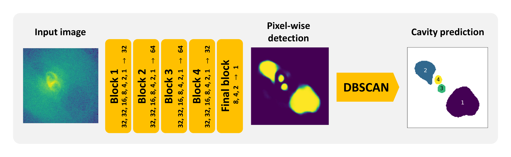
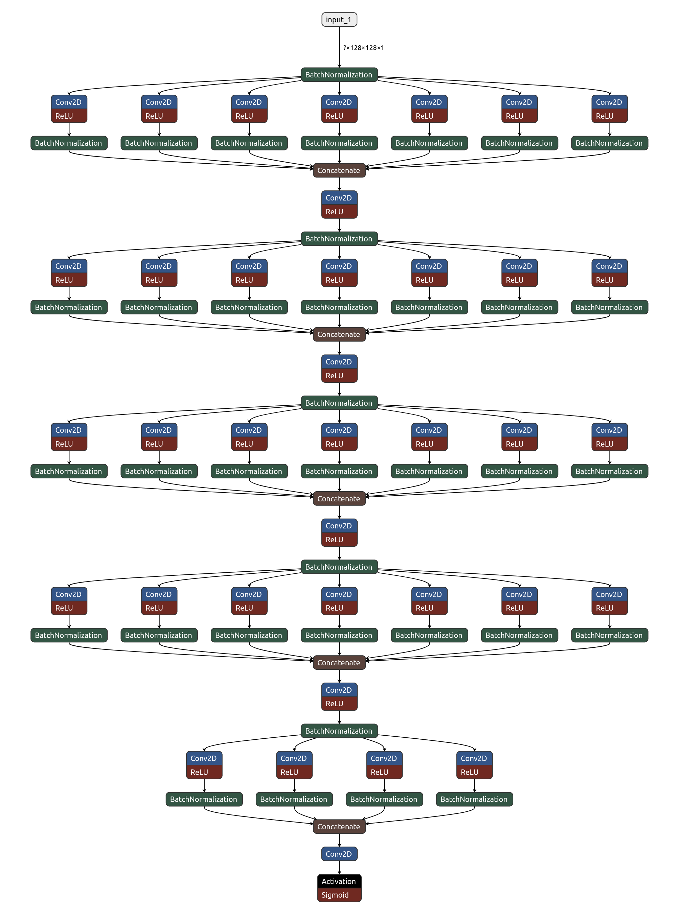

Overview
CADET is a machine learning pipeline trained for identification of surface brightness depressions (X-ray cavities) on noisy Chandra images of early-type galaxies and galaxy clusters. The pipeline consists of a convolutional neural network trained for producing pixel-wise cavity predictions and a DBSCAN clustering algorithm, which decomposes the predictions into individual cavities. The pipeline is further described in [Plšek2023].
The architecture of the convolutional network consists of 5 convolutional blocks, each resembling an Inception layer, and it's development was inspired by [Fort2017] and [Secka2019]. The convolutional neural network (CNN) was implemented using a high-level Python Keras library with Tensorflow back-end. The CNN was written using a functional Keras API which enables saving and loading the model into the Hierarchical Data Format (HDF5) without the need to re-defining the model when loading. In total, the network has 563 146 trainable parameters and the size of the model is 7.4MB. For the clustering, we utilized is the Scikit-learn implementation of the Density-Based Spatial Clustering of Applications with Noise (DBSCAN, [Ester1996]). For monitoring learning curves, comparing final test statistics and selecting optimal hyper-parameters, we used the Tensorboard dash-boarding tool.

Figure 1: The architecture of the CADET pipeline consisting of a convolutional neural network (composed of five Inception-like convolutional blocks) producing a pixel-wise cavity prediction and a clustering algorithm DBSCAN, which decomposes the prediction into individual cavities. The number of individual filters within the Inception layers and subsequent dimensionality-reducing layers is stated alongside individual blocks. The scheme is inspired by Fig. 3 in [Fort2017].
Network architecture
On the input of the CNN, there is a single channel 128x128 image. Since radial profiles of β-models in
both real and simulated images are rather exponential, we transform the input images by a decimal
logarithm (the value of each pixel was raised by one to avoid calculating the logarithm of zero).
Before the images are processed by the first Inception-like convolutional block, they are further
normalized in mini-batches by a batch-normalization layer within the convolutional neural network.
The architecture of the convolutional neural network is similar to that developed by [Fort2017] and
is composed of a series of 5 convolutional blocks. Each block resembles an Inception-like layer
[Szegedy2015] as it applies a set of multiple parallel 2D
convolutions with various kernel sizes and concatenates their outputs. Inception layers within the first 4 blocks
consist of convolutional layers with 32 of 1x1 filters, 32 of 3x3 filters, 16 of 5x5 filters,
8 of 7x7 filters, 4 of 9x9 filters, 2 of 11x11 filters, and one 13x13 filter.
The output of each convolutional layer within the Inception-like layer is activated by Rectified Linear
Unit (ReLU; [Fukushima1975])
activation function, which brings non-linear elements into the network, and then normalized by batch normalization
[Ioffe2015]. Each Inception layer is then followed by a
2D convolutional layer with 32 or 64 of 1x1 filters, which is introduced mainly due to dimensionality reduction.
The output of this convolutional layer is also activated using the ReLU activation function and batch-normalized.
The 1x1 convolutional layers are, in order to prevent overfitting, followed by a dropout layer, where
the dropout rate was varied as a hyper-parameter. Weights of individual 2D convolutional layers were generated
using [He2015] initialization, and biases were initialized with low but non-zero values (0.01).
The convolutional neural network is ended by a final block, which is also composed as an Inception-like
layer but differs from the previous blocks by the number and sizes of individual 2D convolutional
filters (8 of 8x8 filters, 4 of 16x16 filters, 2 of 32x32 filters, and one 64x64 filter) and also
by the activation function of the last 1x1 convolutional filter. Since the output of the network is
intended to be a prediction of whether a corresponding pixel belongs to a cavity (value 1) or not (value 0),
the activation function of the final layer was set to be the sigmoid function, which
outputs real numbers in the range between 0 and 1.
On the output of the CNN, there is a pixel-wise prediction of the same shape as the input image
with a value in each pixel ranging from 0 to 1, which expresses whether that pixel corresponds to a cavity or not.
The pixel-wise prediction is then decomposed into individual X-ray cavities using the DBSCAN clustering
algorithm. Before the decomposition, a pair of discrimination thresholds are applied for the pixel-wise
prediction excluding low-significance regions and keeping only solid cavity predictions while properly
estimating their areas and volumes.

Figure 2: The schematic picture of the convolutional neural network composed of 5 Inception-like blocks. Each block consists of a series of parallel convolutional layers each composed of various numbers of convolutional filters with various sizes. The output of all parallel convolutional layers is then concatenated into a single output, followed by a convolutional layer with 32 of 1x1 filters and a dropout layer, which was for simplicity omitted. The scheme was created using the Netron visualisation tool.